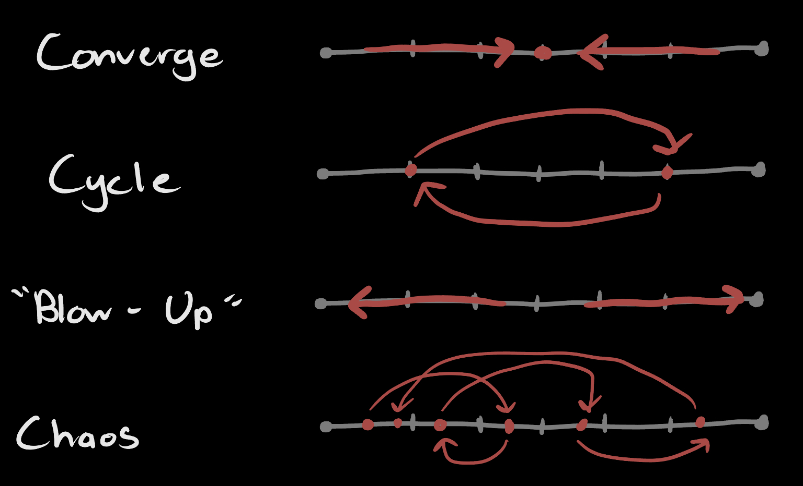
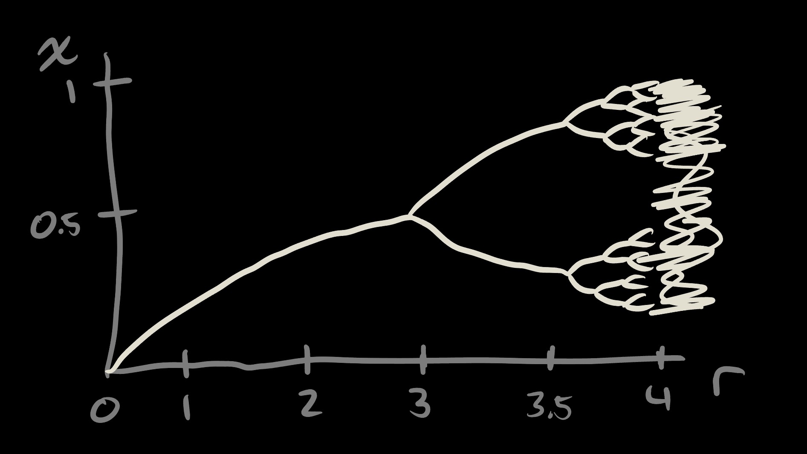
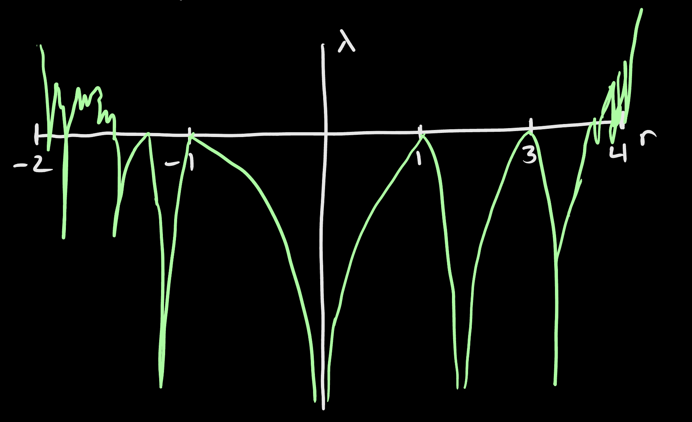
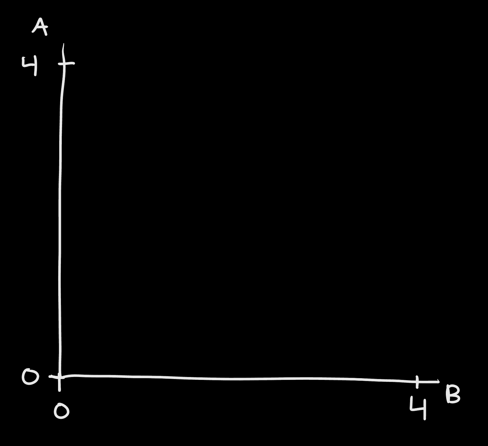
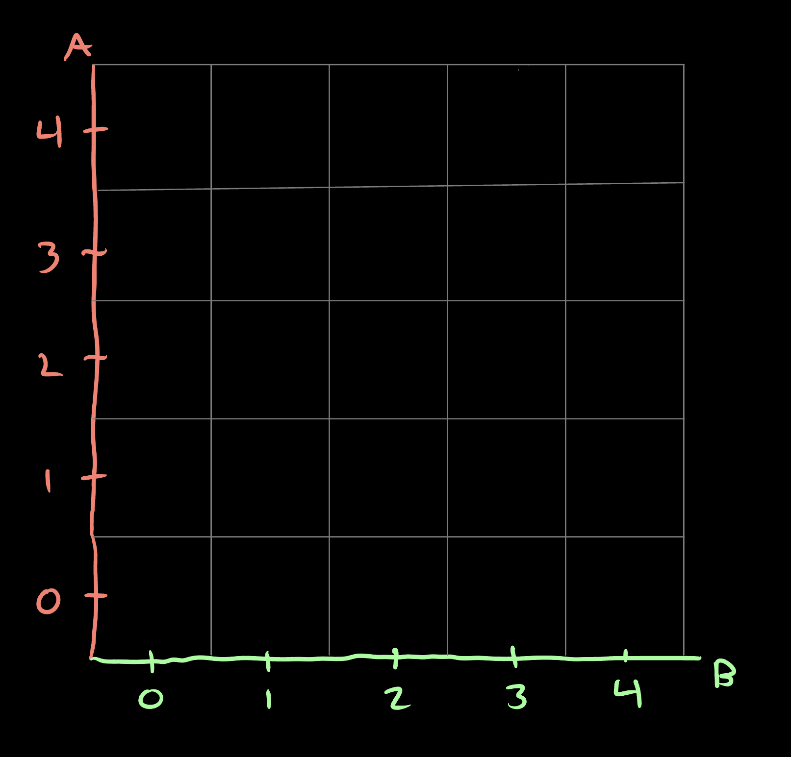
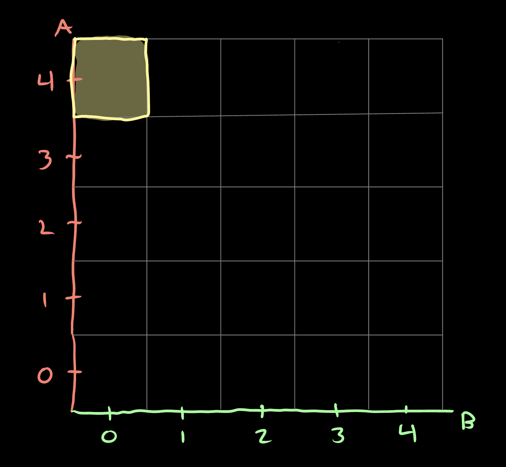
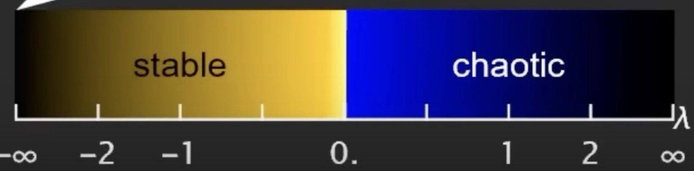
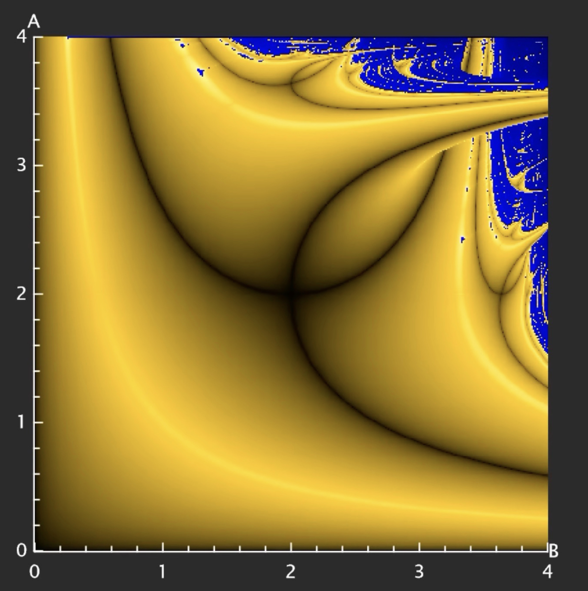

Lyapunov's Fractal and Logistic Maps
Introduction
Lyapunov's fractal is a type of bifurcational fractal derived from a modified version of the logistic map.
The name "Lyapunov" comes from the mathematician Aleksandr Lyapunov who defined something we call stability in his PHD thesis from 1892.
Lyapunov came up with an equation to calculate or determine how chaotic a system is.
This value we compute using the equation is called the Lyapunov exponent denoted with λ.
Now what does this really mean?
The Logistic Map
Before continuing, I must explain what a logistic map is from earlier.
A logistic map is a mapping with a recurrence relation that can provide an example of how complex or chaotic systems can arise from simple equations.
The logistic map is written as
$ x_n = r x_{n-1} (1-x_{n-1}) $
Notice in order to calculate xn we need to calculate $ x_{n-1} $ as well.
For example, we cannot directly calculate $ x_4 $ directly as we would need to calculate $ x_1 $, $ x_2 $, and $ x_3 $.
For the rest of our calculations, we will be using $ x_0 = 0.5 $ which is called our critical point.
Logistic Map Behaviors
What we are interested in is the type of behaviors that the logistic map showcase given different values.
These behaviors will determine how chaotic the system is which I will explain later.
There are four main types of behaviors.
The first type of behavior is converging. This means that as we progress through our calculations, we will eventually converge to a point.
The values will approach or near a point which can be mathematically modeled as
The second type of behavior is cycling. This means the map will cycle between two values forever.
The third type of behavior is blowing-up or continually increasing toward of of the infinities ($ - \infty $ or $ \infty $).
The fourth type of behavior is complete chaos meaning as we continue to calculate $ x_n $, the values cannot be predicted or put into a pattern.
The system is what seems to be random. Bellow is a visualizer for the four types of mapping behaviors.

Experimenting
When we play around with the values of $ r $, we can start to see some meaningful results.
When making $ 0 \le r < 1 $, we can see that the iterations will converge to 0.
See the values bellow for only ten iterations.
$ x_n = r x_{n-1} (1 - x_{n-1}) $
$ r = 0.5 $
$ x_0 = 0.5 $
$ x_1 = 0.125 $
$ x_2 = 0.0546875 $
$ x_3 = 0.025848388671875 $
$ x_4 = 0.012590124737471342 $
$ x_5 = 0.006215806748283127 $
$ x_6 = 0.0030885852473755623 $
$ x_7 = 0.0015395229442726282 $
$ x_8 = 0.0007685764066883431 $
$ x_9 = 0.00038399284849771257 $
This is interesting but what about other values for $ r $?
For any value $ 1 \le r < 3 $, the value will converge.
It turns out that when $ r \ge 3 $, the system is chaotic until $ r \ge 4 $ blowing it up to $ \infty $.
I won't show other calculations due to spacing concerns for the next $ r $ values feel free to try some of them out using this python script that prints out the values of $ x_n $.
Bifurcation
Now that we have defined and explained the behavior of the logistic map, lets graph the relationship between the set of $ x $ values and $ r $ assuming that $ n $ is approaching infinity (or can be seen as the number of iterations).

This graph is our bifurcation diagram.
A bifurcation is when the graph sort of "splits" into two.
For example, when $ r = 3 $ the graph bifurcates or splits into two.
The bifurcation diagram appears when studying many different fractals.
Within the graph, we can observe regions of chaos and values or "islands" of stability.
A single line like the one from $ 0 \le r < 3 $ show that our $ x $ values will converge to one singular value.
If you remember from earlier, different $ r $ values produce different behaviors previously mentioned.
This graph allows us to determine these behaviors visually.
But what if we want to calculate "how chaotic" a region is given $ r $?
Lyapunov's Exponent
In his PHD thesis, Aleksandr Lyapunov defined the Lyapunov exponent.
Originally used for dynamical systems and trajectories, our application of the Lyapunov exponent will be used to measure how much chaos there is given an $ r $ value.
The equation to find the Lyapunov exponent is as follows
$ \lambda = \lim\limits_{N \to \infty} \frac{1}{N} \Sigma_{n=1}^N ln|f'(x_n)| $
I'm not going to explain how Lyapunov came up with this equation, but I do understand what its telling us.
As scary as it looks, its pretty straight forward.
The part $ \lim\limits_{N \to \infty} $ is to ensure that $ \lambda $ is as correct as possible.
$ N $ is defined as our number of iterations idicated by $ \Sigma_{n=1}^N $.
As our number of iterations gets larger and larger, $ x_n $ also progresses meaning if we want $ N = \infty $ then we are reaching the end of the map (if we iterate an infinite number of times).
Because we are computing the values, we can ignore this limit and set $ N $ to be whatever we want.
The higher $ N $ is, the more accurate $ \lambda $ is.
The next part of the equation is $ \frac{1}{N} \Sigma_{n=1}^N $ meaning we are just taking the average of whatever we are summing.
The final part of the equation is $ ln|f'(x_n)| $. To find $ f'(x_n) $ we need to derive our logistic map from earlier (remember r is a constant).
$ \frac{d}{dx_n} [f(x_n)] = \frac{d}{dx_n} [rx_n(1-x_n) = \frac{d}{dx_n} [rx_n-rx_n^2] = \frac{d}{dx_n} [r(x_n-x_n^2) = r(1-2x_n) $
Now we can plug this into the equation.
$ \lambda = \lim\limits_{N \to \infty} \frac{1}{N} \Sigma_{n=1}^N ln|r(1-2x_n)| $
We are now ready to solve for $ \lambda $.
But what does $ \lambda $ even tell us?
How can we tell if something is "more chaotic" based on some random scalar value?
If you play around with this python script you'll be able to see what kind of values we get.
Here are some example values for analysis.
$ N = 10000 $
$ r = 0.237 $
$ \therefore \lambda = -1.43971123967701 $
$ N = 10000 $
$ r = 1.92 $
$ \therefore \lambda = -2.5257330678302834 $
$ N = 10000 $
$ r = 4 $
$ \therefore \lambda = 1.3862943611201093 $
$ N = 10000 $
$ r = -7 $
$ \therefore \lambda = - \infty$
Lets now graph the relation between $ \lambda $ and $ r $.

Now lets put $ x $ and $ \lambda $ on the y-axis and $ r $ on the x-axis at the same time.

After observing this graph, we get an idea of $ \lambda $s relationship to $ r $.
When there are bifurcations, $ \lambda = 0 $.
In between these bifurcations, $ \lambda $ spikes downward.
Examining the chaotic region, $ \lambda $ is only positive and will spike downward on the "islands of stability."
If we define a stable system as $ S $, we can determine if a system is stable or not based on $ \lambda $ alone.
$ \lambda < 0 \implies S $
$ \lambda > 0 \implies \neg S $
There is an additional state when $ \lambda = - \infty $.
This is called "super stable."
Now that we have defined stability and how we can find it, it is time to get into the development of the fractal.
The Fractal
Now that we have the foundational math knowledge required to calculate values for the fractal, we must first understand how it is generated.
The fractal is generated by using a sequence of $ r $ values to calculate $ \lambda $.
These $ r $ values are determined by a special graph we will use to map out the fractal.
The coordinates of point $ P $ on this graph will be $ (A, B) $, our two $ r $ values for the sequence given.
For the rest of this blog, we will be using the sequence $ S = \{A, B, ...\} $.
Since we know the value of $ \lambda $ will "blow-up" to infinity when $ r \ge 4 $, we will have our maximum $ r $ value be 4.

Lets split this graph into an even five by five grid of squares.

Each of these squares will be colored based on the value of $ \lambda $.
For example, lets take the first grid space $ P = (A, B) = (4, 0) $.
Input: $ A = 4, B = 0, S = \{A, B, ...\}, N = 10000, x_0 = 0.5 $
$ \lambda = \lim\limits_{N \to \infty} \frac{1}{N} \Sigma_{n=1}^N ln|r(1-2x_n)| $
Output: $ \lambda = - \infty $
Now let's apply a color scheme for the values of $ \lambda $.
This means we would color this grid space yellow.

This is the basic idea of where the fractal comes in.
When we create a color scale for $ \lambda $ like the one bellow, we will get a more detailed or informative graph representing how chaotic or stable a system is.
Traditionally, we use shades of yellow to show a system is stable and shades of blue to show the system is chaotic.
Increasing the "resolution" or number of grid spaces on the image will give us our desired output.

